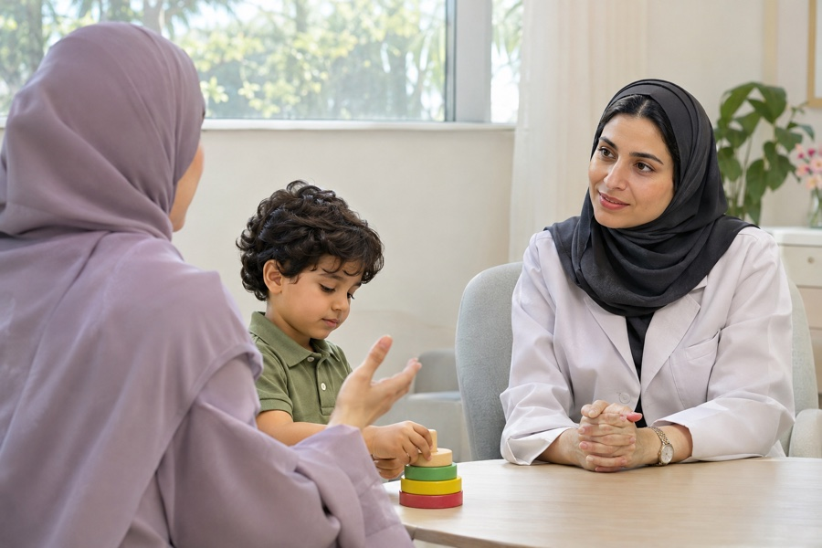

Why we’re building Medka DX
When developmental concerns arise, families need a practical way to explain what they see and find out what support is appropriate.
The team behind Medka DX
Medka DX grew from work incubated by KaRama iT, a health technology company based in Saudi Arabia and Canada. The company pitch describes a tool designed to bring family observations and clinical assessment together.
The proposed product is designed for children with developmental concerns, with Saudi families and care teams in mind.
About KaRama iT
Product development
- Screening workflow
- The pitch describes caregiver questionnaires, observations from home, and a medical questionnaire completed by a clinician.
- Developmental follow-up
- The pitch also outlines milestone tracking, family education, and activities tailored to developmental needs.
- Machine learning research
- The team is exploring how to organise questionnaire and video information for clinical review.